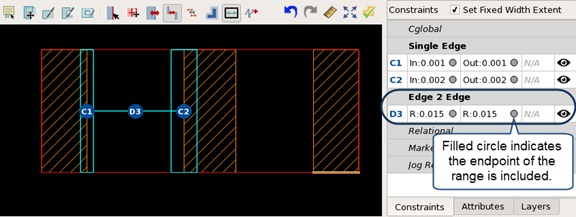

Prerequisites
A pattern library
is open in the Calibre Pattern Matching GUI. See “Invoking the Calibre Pattern Matching GUI”.
A single layer
BCM2 pattern is selected in the pattern list.
For most cases, the BCM2 pattern should have at least one single
edge constraint to specify allowed edge movement. See “Adding a Single Edge Constraint”.
Edge to edge constraints between two fixed edges can be used
in forming relational constraints.
Procedure
- Click the Constraints tab
at the bottom of the panel to the right of the pattern canvas to view
the constraint list.
- Click the Add
Edge to Edge Constraint (
 ) button
above the pattern canvas.
) button
above the pattern canvas.
- Do the following to add the
constraint:
- Click
the first edge of the edge to edge constraint. Valid edges are outlined
in green.
- Click
the second edge of the edge to edge constraint. Valid edges are
outlined in green.
The Add E2E Constraint
dialog box opens after clicking the second edge.
- Fill
in the “Add E2E Constraint” dialog box.
The constraint is initialized as a fixed constraint
at the current edge separation.
Label —
An optional label for the constraint.
Between —
The first value in the edge separation range.
And —
The second value in the edge separation range.
Fixed Distance —
Indicates that the separation between the two edges remains fixed
as one or both of the edges move.
Inc —
Indicates that the endpoint is included.
- Click OK in
the Add E2E Constraint dialog box.
The constraint is added
to the pattern canvas and listed in the Edge 2 Edge list on the Constraints tab.
Figure 1. BCM2 Edge
to Edge Constraint in the GUI
- Choose to save changes
to the pattern library.